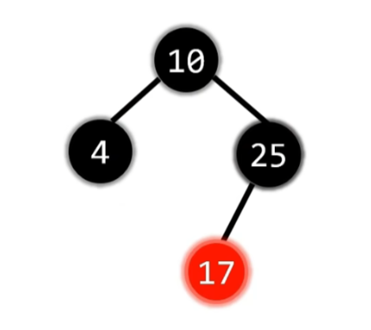

红黑树
定义
红黑树是一种二叉搜索树，每个节点都有一个额外的属性：颜色（红色或黑色）。
性质
红黑树的基本操作
遇到这种情况，则需要进一步检查叔节点的颜色:
- 此时由于父节点是红，插入节点也是红，违反性质4，所以需要将父节点与叔节点涂成黑色
- 而此时黑高度变了，违反了性质5，所以需要把祖父节点涂成红色。
- 然后将祖父节点作为当前节点（即新插入的节点 ），向上递归检查是哪种情况。
- 将父节点作为当前节点，然后进行左旋，此时变为下面的情况3。
- 将父节点变为黑色，祖父节点变为红色
- 将祖父节点作为当前节点，然后进行右旋。
- 这种情况不需要颜色，因为被删除节点一定是黑色，孩子节点一定是红色。否则将会违背性质4或者性质5
- 此时只需要把被删除节点的父节点指向被删除节点的孩子节点，并把孩子节点染成黑色即可。
- 不影响黑高度，直接删除即可
- 此时有四种情况。分别是LL,RR,LR,RL
- 先变色，r变s, s变p, p变黑
- 对父节点p右旋。
- 双黑变单黑
- 先变色，r变s, s变p, p变黑
- 对父节点p左旋。
- 双黑变单黑
- 先变色，r变p, p变黑
- 左右旋：先对左孩子s进行左旋，再对父节点p进行右旋。
- 双黑变单黑
- 先变色，r变p, p变黑
- 右左旋：先对右孩子s进行右旋，再对父节点p进行左旋。
- 双黑变单黑
- 先将双黑（即被删除的节点）的兄弟变红。
- 然后将双黑上移到父节点。
- 如果此时双黑为黑，则向上层情况迭代。即从2.2开始判断是2.2.1还是2.2.2还是下面的2.2.3
- 如果此时双黑为红或者根节点，则直接双黑变单黑
- 先将兄弟节点s和父亲节点p互换颜色
- 父亲节点p朝双黑节点旋转。即双黑节点在右子树则右旋，左子树则左旋。
- 向上层情况迭代。即从2.2开始判断是2.2.1还是2.2.2还是下面的2.2.3
----->
----->
----->
----->
-----> -----> -----> ----->
-----> -----> 
-----> -----> ----->
红黑树复杂度分析
红黑树的时间复杂度是O(log N) , 是因为它的高度最多为
这个高度来源于红黑树的黑高度以及红黑树的性质。
黑高度是从某个节点到其叶子节点路径中，黑色节点的数量（不包含NIL节点）。
设红黑树的黑高度为bh。
根据性质4，红色节点最多的情况下为一个黑节点，一个红节点。所以红色节点的数量最多为bh。
因此，红黑树的高度满足：
所以对于一棵高度为bh的红黑树，其节点数N至少为 N ≥ 2^bh - 1
所以bh ≤ log(N + 1)
因为红黑树的最高高度
红黑树与AVL树的区别
| 特性 | 红黑树 | AVL树 |
|---|---|---|
| 平衡条件 | 较宽松（最长路径 ≤ 2倍最短路径） | 严格（左右子树高度差 ≤ 1） |
| 插入/删除 | 更快（旋转次数少） | 较慢（旋转次数多） |
| 查找 | 稍慢（树较高） | 更快（树更平衡） |
| 适用场景 | 频繁插入/删除的场景 | 频繁查找的场景 |